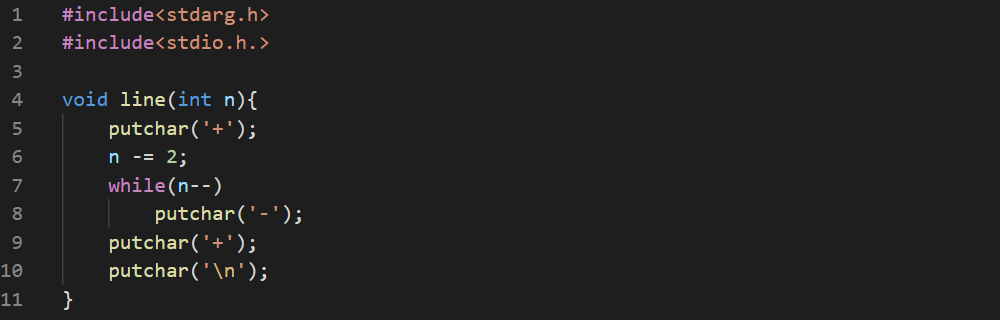

Let's make a wrapper for printf function so it outputs in a frame.
line()
function is used for the upper and lower lines.

The
frprintf()
will get the format string and print it out. It also keeps track of the length.
The whole code is: